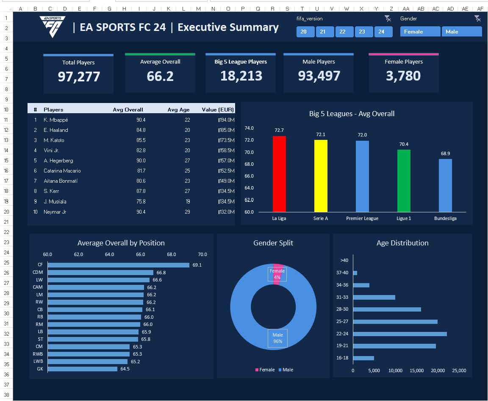
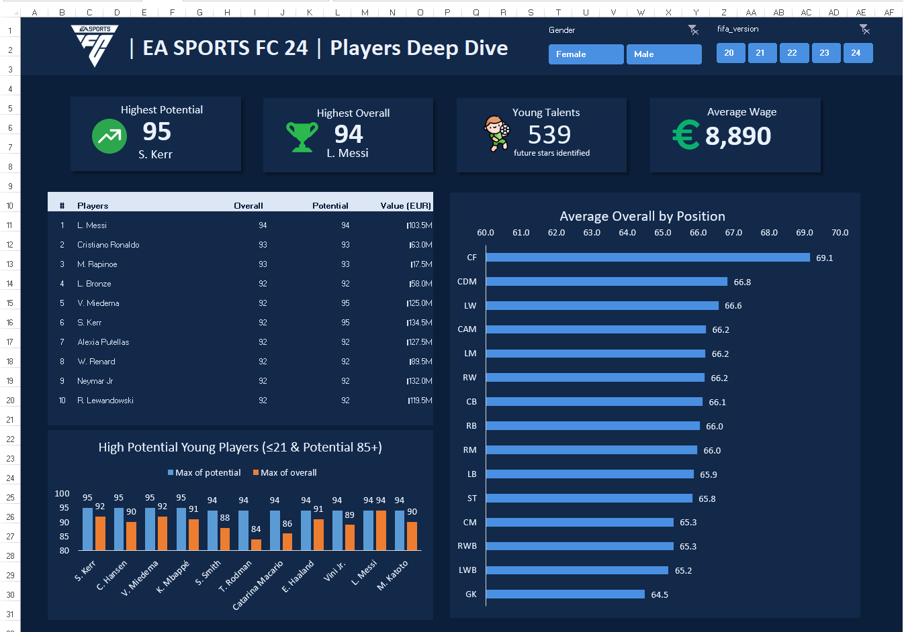
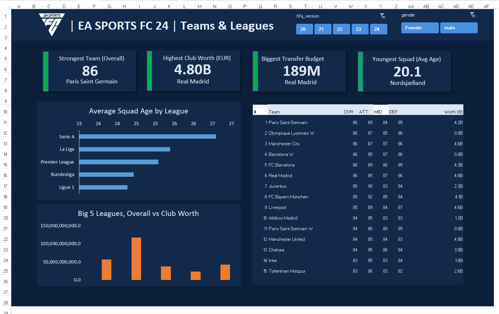

SELECTED PROJECT / EXCEL DASHBOARD
EA SPORTS FC 24 Player, Team & League Analysis
An interactive Excel analysis of player and club attributes across the FIFA 20–24 editions represented in the workbook. Three dashboards bring ratings, potential, age, wages, in-game values, team strength, club worth, budgets, and league profiles into filterable views.
01 / PROJECT PURPOSE
Why this analysis
Player and club data carries many attributes that are difficult to compare in a flat table. This workbook organises the records and summary calculations into three filterable dashboards, allowing a viewer to move from headline measures to specific player groups, positions, teams, and leagues.
Questions explored
- How do player ratings and age profiles vary by position and league?
- Which players stand out by overall rating, potential, or in-game value?
- How do the dashboard summaries change across FIFA editions and gender selections?
- Which clubs lead the displayed strength, worth, and transfer-budget measures?
- How does average squad age compare across leagues?
02 / WORKBOOK & ANALYSIS
Organised for comparison
The workbook separates source records, supporting calculations, and presentation. The two data sheets hold player and team records; calculation sheets support dashboard summaries; three dashboard sheets present the analysis.
Workbook structure
- Players_Data — player-level records.
- Teams_Data — team-level records.
- Calc_Summary, Calc_Players, Calc_Teams — supporting calculation views.
- 01_Summary, 02_Players, 03_Teams — executive summary, player deep dive, and teams & leagues dashboards.
Analysis built
Summary: player counts, average overall rating, Big Five league representation, gender split, player rankings, position comparisons, and age distribution.
Players: overall rating, potential, age, in-game value, wages, highest-rated players, and a young-talent segment defined on the dashboard as under 21 years old with potential of 85 or higher.
Teams & leagues: team overall, attack, midfield, and defence ratings; club worth; transfer budgets; average squad age; and league comparisons.
FIFA-version and gender slicers provide interactive filtering across the dashboard pages. The source-data origin is not identified in the workbook, so no external dataset citation or undocumented cleaning process is claimed.
03 / SNAPSHOT RESULTS
What the displayed workbook view shows
The player dashboard highlights S. Kerr at 95 potential and L. Messi at 94 overall. The summary view shows 93,497 male and 3,780 female players. Nordsjælland has the youngest average squad age shown, at 20.1.
These figures are a snapshot of the workbook's displayed selections. Ratings, wages, values, and club measures are in-game dataset attributes, not real-world performance, salaries, or financial statements; they should not be read as current football statistics.
04 / DASHBOARD PAGES
Explore the workbook views
The screenshots below are static previews. The downloadable Excel workbook contains the PivotTables, charts, supporting sheets, and slicers for interactive exploration.



05 / SKILLS & LIMITATIONS
Skills demonstrated
- Organised player and team data with separate supporting calculation sheets.
- Used PivotTables to summarise attributes into comparable groups and rankings.
- Applied slicers for FIFA-version and gender-based exploration.
- Designed KPI cards and comparisons for ratings, age, value, wages, and club measures.
- Selected charts and tables to fit summary, player, and team/league audiences.
- Defined the young-talent rule clearly and paired headline figures with contextual visuals.
Explore the interactive workbook
Download ANALYSIS SHEETS.xlsx and use the FIFA-version and gender slicers to explore the views. More methodology and repository files are available on GitHub.
Limitations: workbook outputs reflect the supplied data and filter selections. The workbook does not identify the original dataset source, and the analysis is descriptive; it does not explain why a player, team, or league has a particular rating or value.